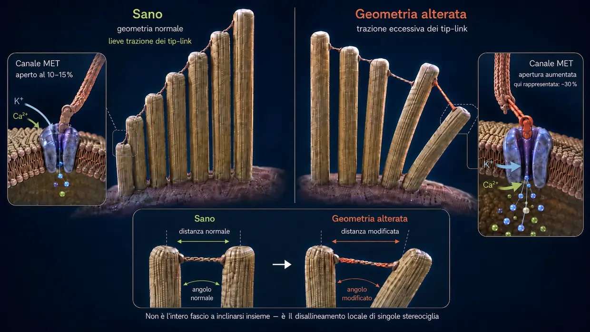
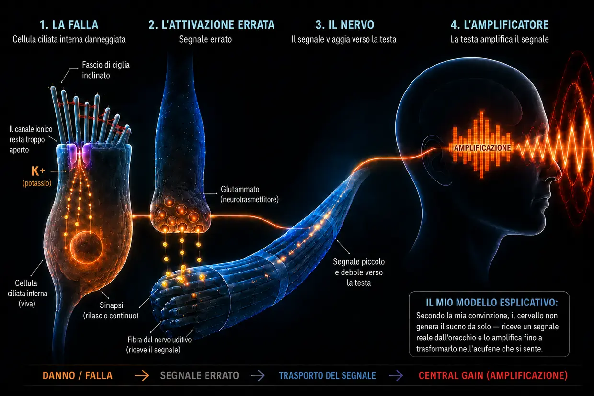

Acufene da rumore — quando l'orecchio arriva ai suoi limiti
Ultimo aggiornamento: agosto 2026
Quella che leggi qui è la mia spiegazione personale, basata su anni di ricerca e sul mio acufene, che ho superato due volte — non è uno standard medico.
Anch'io, all'epoca, ero tra le persone colpite da questa malattia estrema — come avevo già raccontato nella mia biografia.
Ero così disperato che mi ero giurato: o se ne va l'acufene, o me ne vado io. (Naturalmente non lo intendevo così sul serio, ma ero davvero sottoposto a una pressione enorme.)
Quello che vivevo allora era soprattutto un suono forte, stridulo e ad alta frequenza nell'orecchio sinistro, accompagnato da un fruscio molto lontano sullo sfondo. Era la cosa peggiore che in quel momento riuscissi anche solo a immaginare. Come se non bastasse, il terzo giorno era già comparso anche nell'orecchio destro un debole fischio. Poco dopo, quel suono già presente a destra è diventato nettamente più forte — come conseguenza diretta delle indicazioni dei medici, che nel mio caso si sono rivelate del tutto sbagliate.
Quelle «indicazioni» consistevano, in sostanza, nel coprire il suono con altri rumori — per esempio con musica in cuffia a volume più alto o con un fruscio lasciato costantemente acceso. In realtà, però, questo significava che le mie orecchie venivano esposte a stimoli sonori ancora maggiori, benché fossero già fortemente sovraccariche. A posteriori è stato uno degli errori più grandi, perché proprio così le mie condizioni sono peggiorate e il debole suono già presente nell'orecchio destro si è intensificato nettamente.
Quel rumore era come un attacco permanente ai miei nervi, al mio sonno e a tutta la mia vita. I medici mi dicevano che dovevo imparare a conviverci. Su internet trovavo terapie che si contraddicevano a vicenda. Per me, tutto sembrava solo disorientamento.
Così mi sono giurato: non può essere tutto qui. Ho iniziato a documentarmi come un ossesso, a leggere studi, a confrontare testimonianze e a farmi un'idea mia. A poco a poco è emerso un meccanismo chiaro — un quadro che per me era logico e che in seguito ha trovato conferma anche nelle mie esperienze personali.
Oggi posso dirlo: l'acufene da rumore non è un mistero. È il risultato del sovraccarico dell'orecchio — e quando si capisce che cosa accade, si capisce anche perché il rumore c'è e che cosa si può fare in prima persona.
In breve Da leggere in 60 secondi — le cose più importanti a colpo d'occhio
A volumi estremi (per esempio in discoteca), le pompe semplicemente non riescono più a tenere il passo. Il consumo di energia (ATP) esplode, la cellula non riesce più a produrne abbastanza e passa a una modalità d'emergenza sporca, in cui si forma acido lattico e l'ambiente si acidifica — una spirale discendente, simile al cedimento muscolare durante uno sprint. Quando le pompe non riescono più a tenere il passo, il calcio si accumula all'interno delle minuscole ciglia sensoriali. Questo calcio in eccesso attiva enzimi demolitori (le calpaine), che divorano la «colla» (i crosslinker) tra i filamenti strutturali interni del ciglio. Senza questa colla, il ciglio perde rigidità e si deforma. Di conseguenza il canale ionico sulla punta resta permanentemente troppo aperto — come una finestra socchiusa. Attraverso questa falla permanente entra continuamente potassio, che mantiene l'intera cellula sotto tensione elettrica costante. Questa tensione apre, nella stessa cellula ciliata interna, altri canali attraverso i quali il calcio gocciola fino alla sinapsi e innesca lì un rilascio ininterrotto di glutammato verso il nervo uditivo. Il cervello riceve questo segnale anomalo, debole ma costante, rileva che in quella banda di frequenze manca l'input normale e alza moltissimo il proprio preamplificatore interno (Central Gain). Solo attraverso questa amplificazione il sottile segnale anomalo diventa un suono percepibile coscientemente — l'acufene.
La buona notizia: finché la cellula è viva, possiede il progetto e la capacità di ripararsi. Le servono energia, materiale da costruzione e riposo.
Cosa succede davvero nell'orecchio: il normale processo fisiologico dell'udito
Prima di addentrarci nel tema, una breve precisazione terminologica, così da intenderci correttamente in tutto il testo: nell'orecchio interno si trovano le cosiddette cellule ciliate — le vere cellule sensoriali dell'udito. Sulla superficie di ogni singola cellula ciliata si trova un fascio di minuscole estroflessioni simili a dita: le stereociglia. Ogni cellula ciliata ne possiede, a seconda della posizione nella coclea, da 50 a 300 circa, disposte in file dalla più corta alla più lunga, come le canne di un organo. Ognuna di queste stereociglia possiede una propria impalcatura interna di sostegno formata da proteine di actina. Nel linguaggio quotidiano e nella ricerca, queste stereociglia vengono spesso chiamate semplicemente «ciglia» o «ciglia sensoriali» — ed è proprio in questo senso che uso il termine anche in questa pagina. È importante: quando parlo di «ciglia», intendo sempre le stereociglia sulla cellula ciliata, non la cellula ciliata stessa.
Importante per la catena del segnale: quando descrivo il rilascio di glutammato alla sinapsi e il segnale al nervo uditivo, intendo espressamente la cellula ciliata interna.
Di norma il processo uditivo si svolge come una reazione a catena di altissima precisione:
L'impulso: uno stimolo sonoro colpisce le sottili ciglia (stereociglia) delle cellule ciliate e le piega di lato.
La trazione meccanica (tip-link): siccome le punte di queste ciglia sono collegate tra loro da filamenti proteici sottilissimi (i tip-link), piegandosi si crea tensione. Questi filamenti funzionano come un tirante meccanico: aprono fisicamente il canale ionico sulla punta — un po' come quando tiri il tappo della vasca da bagno.
L'ingresso: siccome l'orecchio interno è pieno di un liquido ricco di potassio, attraverso questo canale ora aperto entra subito potassio (K+) nel ciglio sensoriale — e in piccole quantità anche calcio.
L'attivazione: questo ingresso di potassio modifica la tensione elettrica della cellula ciliata interna (depolarizzazione). Di conseguenza, più in basso nella stessa cellula ciliata interna si aprono dei canali del calcio — non nelle ciglia sensoriali, ma nel corpo cellulare sottostante.
Il segnale: soltanto questo calcio che entra nella cellula ciliata interna provoca il rilascio dei neurotrasmettitori, che inviano il segnale al cervello attraverso il nervo uditivo.
Il reset: dopodiché, trasportatori specializzati — sia nelle ciglia sensoriali sia nel corpo della cellula ciliata — ripompano fuori il potassio e il calcio in eccesso con l'aiuto dell'ATP (energia cellulare), permettendo alla cellula di tornare in uno stato di quiete.
Questo sistema è fatto apposta perché ci sia in continuazione un piccolo «apri e chiudi» — come un ritmo di respiro. E qui c'è un dettaglio decisivo: a riposo il canale sulla punta del ciglio non è completamente chiuso, resta sempre aperto di un pochino. È normale ed è voluto, così la cellula può reagire immediatamente, in qualsiasi momento, al suono più flebile. Finché il ciglio sta dritto, quell'apertura resta minima e sotto controllo. Ma se il ciglio si inclina di lato in modo stabile, il canale resta molto più aperto del dovuto — ed è esattamente lì che nasce il problema.
Prima di vedere cosa accade quando questo sistema viene sovraccaricato, una considerazione importante: quando dopo un trauma da rumore si sviluppa un acufene cronico, molte persone colpite pensano — e anche molti medici danno questa impressione — che le cellule ciliate nell'orecchio siano state distrutte in modo irreversibile e che il cervello produca ormai autonomamente il suono a partire dal ricordo. Sono convinto che questa spiegazione sia troppo riduttiva. Proprio perché il suono C'È, sono convinto che da qualche parte nel tessuto periferico ancora eccitabile debba generarsi un segnale anomalo attivo. Nella mia catena principale, questo segnale proviene da una cellula ciliata interna ancora viva ma regolata in modo anomalo. In altre configurazioni periferiche, la fonte potrebbe essere anche un nervo uditivo vivo che genera scariche anomale a causa di problemi della mielina o di un'infiammazione. Il tessuto completamente morto, invece, non invia più alcun segnale.
Quella che segue è una spiegazione dettagliata, passo per passo, di questa perdita di funzione. Chi la preferisce più compatta trova, più in alto in questa pagina, una versione breve.
Quando il rumore diventa troppo intenso (cosa succede durante una serata in discoteca)
Se però arriva troppo suono tutto insieme oppure in modo continuo (cronico), l'equilibrio si rovescia e la meccanica cede. Non tutte le serate in discoteca finiscono così — ma quando si sviluppa un acufene da rumore, sono convinto che il meccanismo alla base sia esattamente questo: una cascata di perdita di energia, crollo meccanico e inondazione chimica — tre processi che si alimentano a vicenda e sfociano in un circolo vizioso.
- 01Crollo energetico
- 02Crollo meccanico
- 03Soccorso d'emergenza & ruota del criceto
Stadio 1: il crollo energetico
Torniamo un attimo al normale processo uditivo: a ogni stimolo sonoro degli ioni entrano nella cellula e poi vanno ripompati fuori consumando ATP. A volume normale è un ritmo rilassato — la cellula pompa con calma e ha energia in abbondanza. Ma a 100 decibel in discoteca le onde sonore martellano sulle ciglia senza sosta e con una violenza brutale. I canali si spalancano, gli ioni entrano in massa e le pompe semplicemente non riescono più a tenere il passo. Il consumo di energia esplode.
Adesso le cellule ciliate bruciano molta più energia di quanta riescano a produrne. Le normali centrali elettriche della cellula (i mitocondri) girano al limite. Per riuscire in qualche modo a saziare questa fame enorme di energia, la cellula ripiega su una via d'emergenza più rapida ma sporca: la glicolisi anaerobica. Questa modalità d'emergenza fornisce sì energia subito, ma produce come scarto acido lattico (lattato), che acidifica l'ambiente cellulare. E gli enzimi che si occupano di produrre energia, per colpa dell'acidità, diventano sempre meno efficienti — una spirale discendente.
Il paragone con lo sport: è una sensazione che tutti conosciamo dall'allenamento con i pesi o dagli sprint. Dopo un po' il muscolo comincia a «bruciare» (aumento del lattato) e a un certo punto cede del tutto — il classico cedimento muscolare. Lo stesso identico cedimento chimico avviene anche nell'orecchio interno; soltanto che lì non lo si percepisce come dolore, bensì come perdita di funzione.
Ed è proprio qui che si nasconde il vero pericolo: quando le pompe non riescono più a tenere il passo, il calcio si accumula all'interno delle ciglia sensoriali. In piccole quantità questo calcio è normale e necessario — ma in eccesso diventa distruttivo. Lo stadio 2 mostra che cosa distrugge e perché le conseguenze sono così fatali.
Stadio 2: il crollo meccanico
Per capire che cosa provoca ora il calcio, bisogna sapere brevemente com'è strutturato internamente un ciglio sensoriale: è formato da centinaia di filamenti paralleli di actina — si può immaginare come un fascio di spaghetti crudi. Questi filamenti sono tenuti insieme da brevi ponti proteici, i cosiddetti crosslinker. Sono loro i veri ingegneri strutturali del ciglio: tengono il fascio così saldamente unito da renderlo rigido come un tubo d'acciaio, senza che debba consumare energia. Finché i crosslinker sono intatti, il ciglio rimane dritto.
La perdita di energia dello stadio 1 innesca ora una reazione a catena fatale:
Le pompe vengono travolte (l'ondata di calcio): come abbiamo visto nel normale processo uditivo, insieme al potassio entra sempre anche una piccola quantità di calcio nel ciglio sensoriale. In condizioni normali non è un problema: per questo ci sono apposite pompe per il calcio situate proprio nella membrana del ciglio, che lo buttano fuori subito. Ma anche queste pompe hanno bisogno di ATP. E nel sovraccarico acuto della discoteca l'energia non è neanche lontanamente sufficiente — le pompe vengono letteralmente travolte. Risultato: perfino quelle piccole quantità di calcio, che normalmente non darebbero fastidio, adesso si accumulano dentro il ciglio — ed è proprio questa sovraconcentrazione a innescare il vero crollo strutturale.
Ed eccolo, il vero crollo strutturale: il calcio accumulato attiva particolari enzimi demolitori (le cosiddette calpaine). Questi enzimi si mangiano proprio quei crosslinker che abbiamo appena conosciuto — la malta che tiene insieme il mazzo.
Per capire perché è così devastante, aiuta un'immagine semplice:
Prendi in mano un singolo spaghetto crudo — lo pieghi e lo spezzi senza fatica. Adesso prendi cento spaghetti e incollali con la colla istantanea fino a farne una barra compatta: all'improvviso hai un tubo rigido che non riesci quasi più a piegare. I singoli filamenti sono deboli, ma incollati insieme sono forti.
Il ciglio sensoriale funziona esattamente così: a renderlo rigido non sono i filamenti di actina da soli, ma il fatto che i crosslinker li tengano uniti.
Se adesso le calpaine si mangiano quella colla, succede il contrario: il tubo rigido torna a essere un insieme di filamenti sciolti. I filamenti di actina si trovano ancora nello stereociglio — ci sono ancora, ma senza i collegamenti in mezzo non stanno più insieme. Il ciglio perde la sua rigidità, non perché si sia rotto qualcosa, ma perché manca la coesione interna.
Se la persona resta ancora in discoteca, spesso va anche peggio: i singoli filamenti, ora scoperti e liberi, sotto la pressione sonora continua nei punti deboli possono rompersi davvero — come spaghetti presi uno a uno, che senza il sostegno dei vicini si piegano sotto il carico. E quando un filamento si rompe, il carico sui filamenti vicini aumenta e a quel punto possono rompersi anche loro: incombe un effetto a cascata.
Il risultato: senza il suo sostegno interno il ciglio non riesce più a restare dritto — si deforma. Per farti un'idea di cosa vuol dire, aiuta questa immagine: le ciglia sensoriali stanno in file una accanto all'altra, di lunghezze diverse, e sulle punte sono collegate tra loro da filamenti sottili (i tip-link). Da sane, tutte le ciglia stanno dritte come candele — i filamenti in mezzo hanno esattamente la tensione giusta e a riposo il canale è aperto solo di pochissimo. Quando arriva un'onda sonora, le ciglia si inclinano un attimo di lato, i filamenti si tendono, il canale si apre — e appena l'onda è passata tornano indietro e tutto si rilassa. Un apri e chiudi pulito.
Adesso immagina che quelle stesse ciglia non stiano più dritte, ma pendano storte — già SENZA che arrivi nessuna onda. I filamenti in mezzo sono tesi in permanenza in modo diverso da come dovrebbero. E allo stesso tempo anche la membrana è deformata. Così il canale resta troppo aperto già a riposo. Da questo momento potassio e calcio entrano nella cellula in modo permanente e incontrollato, anche se la musica ha smesso di suonare da un pezzo. La falla permanente è nata — e con lei la base dell'acufene. La cellula ciliata interna emette un segnale anche se non c'è alcun suono — perché la geometria non è più corretta.

Un acufene da rumore può farsi notare subito dopo l'evento sonoro, ma può anche essere percepito consapevolmente solo ore o giorni più tardi. Nel mio caso il suono si è fatto notare soltanto il terzo giorno; ancora oggi non so con certezza perché. Nelle domande frequenti descriverò espressamente le possibili spiegazioni come ipotesi.
Stadio 3: il soccorso d'emergenza — e perché non basta
La cellula registra il danno e fa scattare subito un meccanismo di sopravvivenza: speciali proteine riparatrici (come XIRP2), già tenute di scorta nel corpo cellulare per le emergenze, corrono verso i punti danneggiati. Se dei filamenti si sono rotti, si avvolgono attorno alle rotture (gli spaghetti dello stadio 2) come un nastro americano molecolare e impediscono che si spezzino del tutto e che la cascata sfugga di mano. Questa è la fase 1: la stabilizzazione d'emergenza acuta. È un processo rapido (minuti, al massimo ore), perché XIRP2 non deve essere prodotta da zero — viene solo richiamata sul punto danneggiato. Il ciglio sensoriale sopravvive — ma l'impalcatura resta molle e instabile, perché XIRP2 non può sostituire i crosslinker mancanti tra i filamenti.
A questo punto dovrebbe necessariamente iniziare la fase 2 (il rimodellamento attivo) — e comprende ben due cantieri: in primo luogo, i cerotti di XIRP2 dovrebbero essere sostituiti con actina fresca e intatta. In secondo luogo, dovrebbero essere sintetizzati nuovi crosslinker e inseriti tra i filamenti, per reincollare il fascio in un'unica barra compatta. Entrambi i processi richiedono enormi quantità di ATP ed entrambi necessitano di materiale proveniente dal corpo cellulare; le stereociglia, inoltre, non hanno centrali elettriche proprie (mitocondri) e dipendono completamente dall'energia fornita dal basso, dal corpo della cellula ciliata. È proprio qui che, nella maggior parte degli adulti, scatta la trappola cronica. Il capitolo seguente spiega perché.
-
01Crollo energetico
Il consumo di ATP esplode, la cellula passa in modalità d'emergenza. L'acido lattico si accumula, l'ambiente si acidifica.
-
02Crollo meccanico
Il calcio in eccesso si mangia la «colla» tra i filamenti delle stereociglia. Il ciglio si deforma — nasce la falla.
-
03Soccorso d'emergenza & ruota del criceto
XIRP2 stabilizza i punti di rottura. Nell'immediato la cellula sopravvive — ma per la riparazione vera manca l'energia.
La trappola della ruota del criceto: perché la riparazione non arriva mai
Adesso arriva il passaggio decisivo, quello dall'evento acuto al problema cronico.
Appena il rumore cessa, comincia il recupero: la cellula riprende subito a produrre ATP e le pompe ritornano gradualmente al normale funzionamento. L'intero processo rigenerativo — smaltimento dell'acidità, interventi di riparazione e ripristino delle riserve energetiche — avviene poi soprattutto con il tempo e in particolare durante il sonno. Il corpo, insomma, fa pulizia: l'ondata di ioni accumulatasi nella fase acuta — sia per il carico massiccio della discoteca sia per la falla che nel frattempo si è formata — viene espulsa gradualmente. Il picco estremo di ioni si normalizza in gran parte e, con esso, anche il livello del calcio scende sotto la soglia critica: gli enzimi demolitori (le calpaine) diventano inattivi e il danno strutturale attivo si arresta.
Eppure, perché l'orecchio non guarisce?
Perché la falla permanente resta lì. Le stereociglia continuano a stare storte, il canale ionico resta stabilmente troppo aperto e le pompe devono smaltire quell'eccesso ventiquattr'ore su ventiquattro. Per capire perché è proprio questo a impedire la riparazione, aiuta l'immagine che segue:
Il principio tetto-casa-cantina
Per cogliere questo dilemma in un colpo d'occhio, conviene guardare la cellula ciliata come un edificio alimentato da un unico contatore della luce (l'ATP):
Il tetto: le sottili ciglia sensoriali (le stereociglia) con l'impalcatura di actina indebolita, bloccate nella modalità d'emergenza della fase 1. Quassù c'è la falla, e quassù dovrebbe lavorare il motore della ricostruzione. Invece le pompe del tetto sono occupate a buttare fuori di continuo il potassio che entra e soprattutto il calcio pericoloso — perché se il calcio quassù risale sopra la soglia critica, gli enzimi demolitori rischiano di riattivarsi e di peggiorare il danno.
La casa: il grande corpo cellulare vero e proprio — e l'UNICO posto in cui si trovano le centrali elettriche (i mitocondri), quelle che producono l'ATP per tutte le zone della cellula. Attraverso il tetto rotto adesso entrano ioni in eccesso senza sosta.
La cantina: anche quaggiù ci sono pompe ioniche, che devono disperatamente spalare verso l'esterno, controcorrente, il calcio filtrato dall'alto, perché la casa non si allaghi del tutto e la cellula non muoia.
Poiché sia le pompe del tetto sia quelle della cantina consumano la maggior parte dell'energia disponibile soltanto per impedire all'edificio di affondare, alla cellula non restano risorse per mandare gli operai a riparare il danno all'impalcatura di actina. La riparazione continua a essere rimandata. La falla resta aperta. Le pompe sgobbano. La ruota del criceto continua a girare.
Dalla lotta per la sopravvivenza al suono: così nasce l'acufene

Ora sappiamo che la falla permanente è presente e che la cellula è bloccata nella ruota del criceto. Ma come si trasforma tutto questo in un suono udibile? Il potassio che entra continuamente mantiene l'intera cellula ciliata interna sotto tensione elettrica permanente (depolarizzata) — non ritorna mai al proprio potenziale di riposo. Questa tensione costante apre a sua volta i canali del calcio voltaggio-dipendenti situati più in basso nella stessa cellula ciliata interna; attraverso questi canali una piccola quantità di calcio gocciola continuamente fino alla sinapsi. Il calcio innesca un rilascio lieve ma ininterrotto del neurotrasmettitore glutammato verso il nervo uditivo. Il cervello riceve un segnale permanente di «FUOCO!» — anche in assenza di suono — e traduce questo cortocircuito chimico in un rumore.
Cosa ne fa il cervello: l'amplificatore, non la causa
È qui che il cervello entra in scena. La medicina ufficiale sostiene spesso che il cervello abbia «imparato» l'acufene e che ormai produca il suono in completa autonomia. Sono convinto che questa spiegazione sia incompleta. Il cervello non crea l'acufene dal nulla. Come un processore estremamente complesso, reagisce al flusso di dispersione costante e anomalo di glutammato proveniente dall'orecchio.
Poiché, a causa del danno da rumore e delle ciglia inclinate, mancano i segnali esterni autentici e puliti (le frequenze normali), il centro uditivo del cervello entra in una sorta di astinenza sensoriale. Per un meccanismo protettivo evolutivo, il cervello reagisce senza compromessi: alza moltissimo il preamplificatore proprio per le frequenze mancanti — il cosiddetto «Central Gain». In natura era essenziale per la sopravvivenza: permetteva di sentire comunque i passi di un predatore che si avvicinava furtivamente, nonostante un danno all'orecchio. Il cervello prende quindi il flusso di dispersione, di per sé molto debole, delle cellule ciliate interne danneggiate e lo fa passare attraverso un equalizzatore gigantesco. Amplifica il segnale fino a trasformarlo nella sirena assordante che percepiamo coscientemente come acufene.
La trappola fatale del mascheramento: perché usare app con rumori di mascheramento è la cosa peggiore che si possa fare
Mascherare brucia l'unica finestra di riparazione che al tuo orecchio è rimasta.
Nella mia esperienza, è questo l'errore più grave commesso dalle persone colpite — su consiglio medico. La raccomandazione classica suona così: «Copra il suono con rumore bianco, suoni della natura o musica a basso volume». Intuitivamente sembra logico e nell'immediato offre davvero sollievo. Ma, per come la intendo io, a livello biochimico è fatale.
Bisogna rendersene conto: le ciglia sono ancora vive e attive — solo che stanno storte. La cellula in realtà cerca di sfruttare ogni fase di riposo (soprattutto nel sonno) per riparare la struttura con l'energia che le è rimasta e per rimettersi dritta.
Se però si continua a esporre artificialmente le orecchie a suoni, si costringono le stereociglia danneggiate a tornare in modalità di lavoro. Devono reagire di nuovo al suono, pompare ioni e consumare esattamente l'energia che avevano risparmiato per la fase 2 — la riparazione vera e propria. E c'è un secondo problema: ogni onda sonora fa scorrere l'uno contro l'altro i filamenti di actina del fascio danneggiato. I crosslinker appena inseriti vengono nuovamente scossi via da questo movimento continuo prima di riuscire a legarsi correttamente — come un piolo che si cerca di inserire in una scala mentre qualcuno la scuote.
Tradotto nell'immagine tetto-casa-cantina: il suono artificiale frusta meccanicamente un tetto che è già molle di suo. La falla resta troppo aperta. Le pompe in cantina devono girare al limite assoluto ventiquattro ore al giorno. Per gli operai lassù sul tetto non avanza energia, zero.
Questo spiega un fenomeno che ho vissuto io stesso e che riferiscono innumerevoli persone colpite: si maschera l'acufene di notte con un fruscio, ci si sente meglio sul momento, ma il mattino dopo l'acufene è più aggressivo e più forte della sera precedente. Il motivo: la cellula ha bruciato il proprio turno di notte — l'unica finestra di riparazione — per elaborare il suono artificiale.
Una parola onesta al riguardo: capisco perfettamente perché alcune persone riescano a convivere bene con il mascheramento. Se l'acufene trascina una persona psicologicamente nel baratro e rende impossibile dormire, mascherarlo per breve tempo può essere letteralmente salvavita — e non voglio convincere chi si trova in questa situazione a rinunciarvi. Ma per la rigenerazione vera e propria — cioè affinché l'acufene scompaia davvero — il mascheramento è controproducente per come la intendo io. È questa la differenza che voglio sottolineare.
La speranza: perché la riparazione è possibile
Nonostante tutti questi meccanismi c'è uno spiraglio decisivo: dato che il nucleo cellulare è intatto e che l'impalcatura di actina esiste ancora nelle sue linee essenziali, la cellula può riparare la struttura. Le stereociglia hanno un turnover attivo dell'actina — i filamenti di actina vengono continuamente smontati e ricostruiti. La cellula rinnova quindi senza sosta la propria struttura. In concreto, la fase 2 significa questo: i cerotti di XIRP2 sui punti di rottura dei filamenti vengono sostituiti con actina fresca e tra i filamenti vengono inseriti nuovi crosslinker, finché il fascio non torna compatto e rigido. La domanda non è se la cellula sia in grado di riparare, ma se nelle condizioni date disponga di energia e materiale da costruzione sufficienti — e se le venga concesso il riposo necessario.
Anche se lo scheletro interno di sostegno fosse gravemente collassato, non significherebbe una condanna definitiva. Finché la cellula è viva, possiede il progetto e la capacità di ricostruire questa impalcatura — non appena saranno nuovamente disponibili energia (ATP) e materiale da costruzione sufficienti e verrà arrestato lo stress chimico.
È interessante notare che proprio questo principio — aumentare l'energia cellulare (ATP) — viene perseguito anche nella ricerca farmaceutica, e ciò sostiene il mio modello esplicativo (anche se finora l'effetto su ATP/ROS è stato mostrato soltanto in colture cellulari). Il farmaco AC102 mira esattamente a questo meccanismo: in un modello animale (gerbillo della Mongolia), dopo una singola dose di AC102 un modello comportamentale tipico dell'acufene è regredito quasi completamente nell'arco di cinque settimane (alla fine soltanto 1 animale su 15 mostrava ancora il comportamento, contro gran parte del gruppo placebo), misurato mediante il riflesso di trasalimento (GPIAS) — un correlato comportamentale riconosciuto dell'acufene. Nell'uomo è attualmente in corso uno studio clinico di fase 2, i cui risultati sono attesi per il 2026 (Lo stato della ricerca su AC102 nella mia pagina delle fonti →). Anche la laserterapia a bassa intensità (fotobiomodulazione) mira a questo approccio energetico fondamentale.
La conclusione
Nel mio modello principale, dal punto di vista fisiologico, l'acufene cronico da rumore è un segnale anomalo attivo proveniente da tessuto periferico ancora eccitabile. Per i miei episodi personali, suppongo che la fonte principale fosse costituita da cellule ciliate interne vive, bloccate in una modalità di emergenza energetica; considero possibile un coinvolgimento del nervo uditivo o della mielina, ma nel mio caso non posso dimostrarlo con certezza. Il cervello non crea il suono dal nulla, in completa assenza di segnali, ma amplifica il segnale anomalo già presente.
Che il suono rimanga dipende esclusivamente dal fatto che si aiutino le cellule a chiudere la falla e si torni a fornire energia alle pompe, affinché il ciglio possa raddrizzarsi.
Che cosa fare, quindi, in caso di acufene da rumore?
Anche se i meccanismi sono complessi, ci sono tre leve centrali che conviene comprendere subito. Nella pagina dedicata al mio approccio alla soluzione descrivo dettagliatamente quali sono e come, all'epoca, mi hanno aiutato per ben due volte a liberarmi dell'acufene, fino alla sua completa scomparsa.
Come sono fatte in concreto queste tre leve e come mi hanno aiutato a suo tempo, lo descrivo nella pagina successiva.
Tutta la storia in un'unica catena
Quello che succede in un trauma da rumore, secondo il mio modello di spiegazione, si può riassumere in una catena continua:
A volumi estremi (per esempio in discoteca), le pompe semplicemente non riescono più a tenere il passo. Il consumo di energia (ATP) esplode, la cellula non riesce più a produrne abbastanza e passa a una modalità d'emergenza sporca, in cui si forma acido lattico e l'ambiente si acidifica — una spirale discendente, simile al cedimento muscolare durante uno sprint. Quando le pompe non riescono più a tenere il passo, il calcio si accumula all'interno delle minuscole ciglia sensoriali. Questo calcio in eccesso attiva enzimi demolitori (le calpaine), che divorano la «colla» (i crosslinker) tra i filamenti strutturali interni del ciglio. Senza questa colla, il ciglio perde rigidità e si deforma. Di conseguenza il canale ionico sulla punta resta permanentemente troppo aperto — come una finestra socchiusa. Attraverso questa falla permanente entra continuamente potassio, che mantiene l'intera cellula sotto tensione elettrica costante. Questa tensione apre, nella stessa cellula ciliata interna, altri canali attraverso i quali il calcio gocciola fino alla sinapsi e innesca lì un rilascio ininterrotto di glutammato verso il nervo uditivo. Il cervello riceve questo segnale anomalo, debole ma costante, rileva che in quella banda di frequenze manca l'input normale e alza moltissimo il proprio preamplificatore interno (Central Gain). Solo attraverso questa amplificazione il sottile segnale anomalo diventa un suono percepibile coscientemente — l'acufene.
Il lato tragico: dopo la discoteca l'energia si rigenera sì in parte, ma le pompe ne consumano la maggior parte soltanto per gestire la falla permanente e mantenere in vita la cellula. Per la vera riparazione — produrre nuovi crosslinker e raddrizzare di nuovo l'impalcatura — non resta nulla. La cellula rimane bloccata nella ruota del criceto. Che l'acufene rimanga temporaneo o diventi cronico dipende da quanta colla è stata distrutta (poca = riparabile, molta = ruota del criceto), dal fatto che si lasci riposare l'orecchio o si continui a esporlo a suoni (nella mia esperienza, mascherare con il fruscio peggiora la situazione) e dal fatto che il corpo riceva energia e materiale da costruzione sufficienti. La buona notizia: finché la cellula è viva, possiede il progetto e la capacità di ripararsi — le servono energia, materiale da costruzione e riposo.
Domande di approfondimento & FAQ
Per chi vuole approfondire: nella sezione delle FAQ tratterò altri temi relativi all'acufene da rumore — per esempio perché il volume dell'acufene può oscillare, perché si attenua temporaneamente quando lo si copre e perché poco dopo torna a farsi sentire più forte. Al momento sto costruendo la pagina delle FAQ passo dopo passo.
Avviso importante
In caso di acufene o problemi di udito, soprattutto se comparsi improvvisamente, rivolgiti a un otorinolaringoiatra per far valutare le cause organiche. I contenuti, i modelli esplicativi e gli approcci condivisi su questo sito non sono una consulenza medica, ma la mia testimonianza personale e la mia ricerca. Ogni corpo è a sé. Non sono un medico e non faccio promesse di guarigione. Chi mette in pratica gli approcci descritti qui lo fa sotto la propria responsabilità.